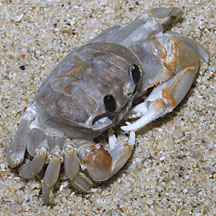
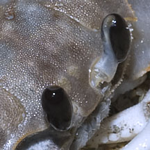
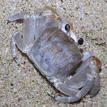
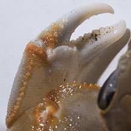
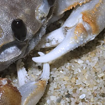

|
|
| crabs text index | photo index |
| Phylum Arthropoda > Subphylum Crustacea > Class Malacostraca > Order Decapoda > Brachyurans > Superfamily Ocypodoidea |
| Smooth-eyed
ghost crab Ocypode cordimanus Family Ocypodidae updated Dec 2019 Where seen? This crab is seldom seen, usually on the higher shore. It was previously also called Ocypode cordimana. Features: Body width about 5cm. Body squarish box-like. Pale greyish blue without dark markings on the back of the body. Pincers long, downward pointing. It lacks ridges on the inside of the 'palm'. Legs long with pointed tips. Large eyes on very short stalks, without 'horns' on top of the eye. May be mistaken for the Horn-eyed ghost crab (Ocypode ceratophthalmus): the Smooth-eyed ghost crab lacks 'horns' on its eyes and seems a little slower and less skittish. It lacks ridges on the inner palm. But juvenile Long-eyed ghost crabs also lack 'horns' and tend to remain immobile when spotted. Status and threats: The Smooth-eyed ghost crab is listed as 'Vulnerable' in the Red List of threatened animals of Singapore. |
 Sentosa, Sep 11 |
 Eyes without 'horns'. |
 Back without dark marks. |
 Lacks ridges on inner palm. |
 |
| Smooth-eyed ghost crabs on Singapore shores |
On wildsingapore
flickr
|
Links
References
|